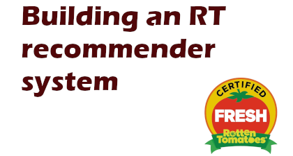

Data Science and Information Studies Portfolio
A portfolio containing projects related to data science and information studies, largely carried out in Python.
Read more about me, or reach me at LinkedIn
Rotten Tomatoes Recommender
This project covers the creation of a Rotten Tomatoes recommender system, from webscraping to optimization. Click above for a write up or check out the demo available here!